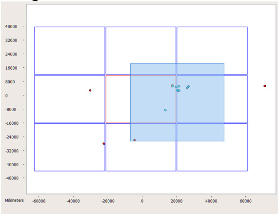

In Calibre DefectReview,
you can select defects by dragging a box around them using your mouse.
Procedure
- Right click on the any empty
area of the Defect Map. A popup menu appears (see Figure 1).
Figure 1. RubberBand Mode Selection
- Click RubberBand Selection. A check
mark indicates the mode is enabled.
Note: When RubberBand Selection is
enabled, you can only move defects to the center position of the
Defect Map. If you click on any object other than defects, the Defect
Map does not change.
- To select defects:
- Click the top-left or bottom-right
corner of the desired area.
- Drag diagonally across the
selected area and release.
Figure 2. Area Selection of
Defects
The selected defects are highlighted
in cyan as shown in Figure 3.
Figure 3. Highlighting of Selected
Defects
Results
You can now perform various operations
on the selected defects by right-clicking on any of the highlighted
defects (see Figure 4). Refer to the section “Defect List Operations” for details.
Figure 4. Operations Menu for
Defects